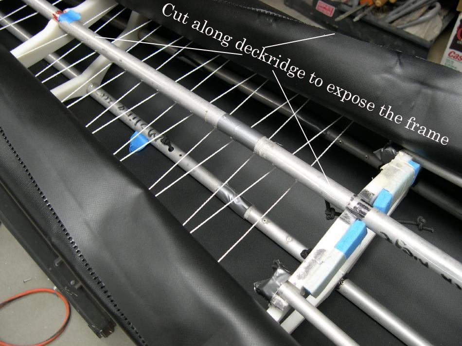

| Zipper to Stem Attachment ( 9 of 11 ) | Menu Last Page Next Page |
|

Cutting Open The Deck - After cutting open the flap to gain access to the zipper, next unzip to expose the deck skin. Cut along the deckridge to open up the deck. Remove the lacing and reclose the deck using the zipper.
|
|